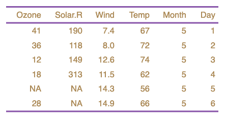

The current formatting properties (see get_flextable_defaults())
are automatically applied to every flextable you produce.
Use set_flextable_defaults() to override them. Use init_flextable_defaults()
to re-init all values with the package defaults.
set_flextable_defaults(
font.family = NULL,
font.size = NULL,
font.color = NULL,
text.align = NULL,
padding = NULL,
padding.bottom = NULL,
padding.top = NULL,
padding.left = NULL,
padding.right = NULL,
border.color = NULL,
background.color = NULL,
line_spacing = NULL,
table.layout = NULL,
cs.family = NULL,
eastasia.family = NULL,
hansi.family = NULL,
decimal.mark = NULL,
big.mark = NULL,
digits = NULL,
na_str = NULL,
nan_str = NULL,
fmt_date = NULL,
fmt_datetime = NULL,
extra_css = NULL,
fonts_ignore = NULL,
theme_fun = NULL,
post_process_pdf = NULL,
post_process_docx = NULL,
post_process_html = NULL,
post_process_pptx = NULL
)
init_flextable_defaults()Arguments
- font.family
single character value. When format is Word, it specifies the font to be used to format characters in the Unicode range (U+0000-U+007F).
- font.size
font size (in point) - 0 or positive integer value.
- font.color
font color - a single character value specifying a valid color (e.g. "#000000" or "black").
- text.align
text alignment - a single character value, expected value is one of 'left', 'right', 'center', 'justify'.
- padding
padding (shortcut for top, bottom, left and right padding)
- padding.bottom, padding.top, padding.left, padding.right
paragraph paddings - 0 or positive integer value.
- border.color
border color - single character value (e.g. "#000000" or "black").
- background.color
cell background color - a single character value specifying a valid color (e.g. "#000000" or "black").
- line_spacing
space between lines of text, 1 is single line spacing, 2 is double line spacing.
- table.layout
'autofit' or 'fixed' algorithm. Default to 'autofit'.
- cs.family
optional and only for Word. Font to be used to format characters in a complex script Unicode range. For example, Arabic text might be displayed using the "Arial Unicode MS" font.
- eastasia.family
optional and only for Word. Font to be used to format characters in an East Asian Unicode range. For example, Japanese text might be displayed using the "MS Mincho" font.
- hansi.family
optional and only for Word. Font to be used to format characters in a Unicode range which does not fall into one of the other categories.
- decimal.mark, big.mark, na_str, nan_str
formatC arguments used by
colformat_num(),colformat_double(), andcolformat_int().- digits
formatC argument used by
colformat_double().- fmt_date, fmt_datetime
formats for date and datetime columns as documented in
strptime(). Default to '%Y-%m-%d' and '%Y-%m-%d %H:%M:%S'.- extra_css
css instructions to be integrated with the table.
- fonts_ignore
if TRUE, pdf-engine pdflatex can be used instead of xelatex or lualatex. If pdflatex is used, fonts will be ignored because they are not supported by pdflatex, whereas with the xelatex and lualatex engines they are.
- theme_fun
a single character value (the name of the theme function to be applied) or a theme function (input is a flextable, output is a flextable).
- post_process_pdf, post_process_docx, post_process_html, post_process_pptx
Post-processing functions that will allow you to customize the display by output type (pdf, html, docx, pptx). They are executed just before printing the table.
Value
a list containing previous default values.
Illustrations


See also
Other functions related to themes:
get_flextable_defaults(),
theme_alafoli(),
theme_booktabs(),
theme_box(),
theme_tron_legacy(),
theme_tron(),
theme_vader(),
theme_vanilla(),
theme_zebra()
Examples
ft_1 <- qflextable(head(airquality))
ft_1
#> a flextable object.
#> col_keys: `Ozone`, `Solar.R`, `Wind`, `Temp`, `Month`, `Day`
#> header has 1 row(s)
#> body has 6 row(s)
#> original dataset sample:
#> Ozone Solar.R Wind Temp Month Day
#> 1 41 190 7.4 67 5 1
#> 2 36 118 8.0 72 5 2
#> 3 12 149 12.6 74 5 3
#> 4 18 313 11.5 62 5 4
#> 5 NA NA 14.3 56 5 5
old <- set_flextable_defaults(
font.color = "#AA8855",
border.color = "#8855AA")
ft_2 <- qflextable(head(airquality))
ft_2
#> a flextable object.
#> col_keys: `Ozone`, `Solar.R`, `Wind`, `Temp`, `Month`, `Day`
#> header has 1 row(s)
#> body has 6 row(s)
#> original dataset sample:
#> Ozone Solar.R Wind Temp Month Day
#> 1 41 190 7.4 67 5 1
#> 2 36 118 8.0 72 5 2
#> 3 12 149 12.6 74 5 3
#> 4 18 313 11.5 62 5 4
#> 5 NA NA 14.3 56 5 5
do.call(set_flextable_defaults, old)